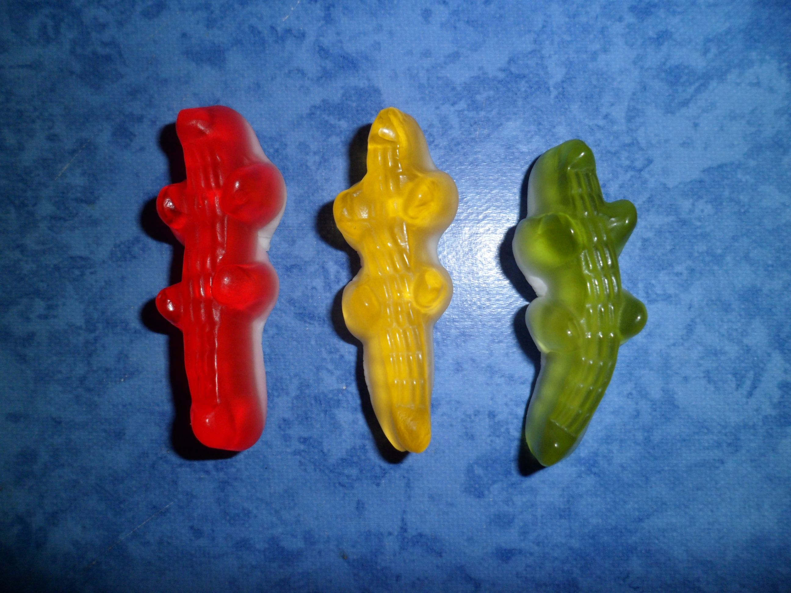

Le Hari Croco est apparu pour la première fois en 1984. Distribué à sa sortie uniquement dans les pays d'Amérique du Nord, le produit a rapidement traversé l'Atlantique pour connaître le succès en Europe. Il s'agit du cinquième produit le plus vendu par la marque (Haribo) en France. Il en existe trois variantes : jaune, vert et rouge. En 2014, le bleu et le orange font leur apparition.
Haribo est une marque de confiserie allemande et le nom d'une multinationale fondée en 1920 par le confiseur allemand Hans Riegel. Elle tient son nom de son inventeur et de sa ville d'origine, Bonn : Hans Riegel Bonn. Son premier produit commercialisé à grand succès fut l'Ours d'Or, un bonbon gélifié en forme d'ourson.
